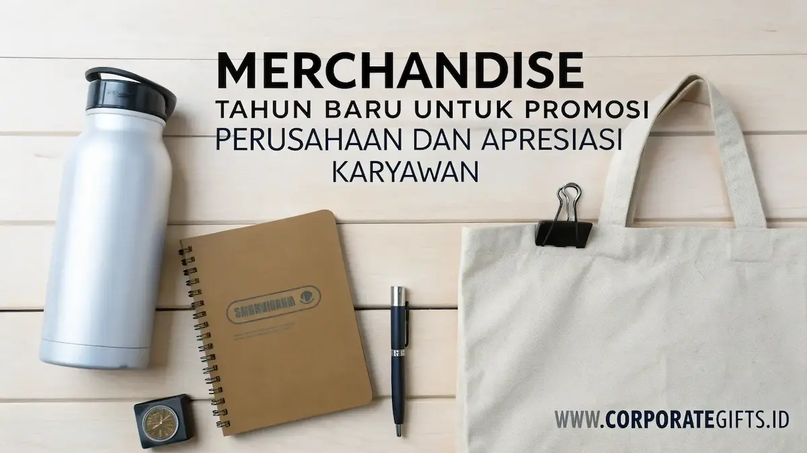

Corporate Gifts ID - Merchandise Tahun Baru adalah hadiah atau suvenir korporat yang diberikan oleh perusahaan kepada karyawan, klien, dan mitra bisnis pada momen pergantian tahun. Selain sebagai bentuk apresiasi dan refleksi evaluasi kinerja, merchandise ini berfungsi sebagai alat branding dan promosi yang efektif untuk memperkuat visibilitas merek di kehidupan sehari-hari penerimanya.
Melalui desain yang disesuaikan, logo yang elegan, dan pemilihan produk yang relevan, suvenir tahun baru dapat menjadi simbol kepedulian, profesionalisme, serta konsistensi brand Anda di tahun yang akan datang.
Poin Kunci Merchandise Tahun Baru:
- Eksposur Berkelanjutan: Produk fungsional harian menjamin frekuensi interaksi brand tertinggi sepanjang tahun.
- Komitmen Keberlanjutan: Pilihan merchandise ramah lingkungan mencerminkan tanggung jawab sosial perusahaan (CSR).
- Sentuhan Personalisasi: Hadiah berlogo presisi dengan packaging eksklusif meningkatkan nilai persepsi dan loyalitas klien.
- Perencanaan Tepat Waktu: Pemesanan ideal dilakukan 2 hingga 3 bulan sebelum akhir tahun guna kelancaran mockup, produksi, dan distribusi.
Barang Fungsional untuk Aktivitas Kerja Sehari-hari
Produk yang digunakan setiap hari memiliki nilai promosi paling tinggi karena mampu menjaga eksposur merek secara konsisten. Berikut beberapa pilihan merchandise promosi yang fungsional namun tetap elegan:
1. Buku Catatan dan Agenda Tahunan
Buku catatan custom masih menjadi pilihan populer untuk hadiah perusahaan. Di era digital sekalipun, banyak profesional tetap mengandalkan catatan fisik untuk mencatat ide, target, atau rencana kerja. Tambahkan elemen desain khas perusahaan seperti logo embossed, warna brand, atau kutipan motivasi di setiap halaman pembatas.
2. Pulpen Cetak Logo Logam Eksklusif
Pulpen adalah merchandise promosi klasik yang tidak pernah kehilangan daya tariknya. Produk ini sangat cocok untuk dibagikan dalam paket kado tahun baru atau acara internal perusahaan. Pilih bahan metal berkualitas tinggi dengan tinta refillable agar terkesan mewah dan tahan lama.
3. USB Flash Drive Multifungsi
USB flash drive berlogo perusahaan cocok untuk klien, vendor, atau mitra bisnis yang memiliki mobilitas tinggi. Model modern kini hadir dengan balutan casing kayu alami, kulit sintetis, hingga logam berlapis chrome yang menambah prestise unboxing.
4. Mousepad Custom Ergonomis
Mousepad custom bukan hanya alat pendukung kerja meja, tetapi juga sarana promosi visual yang efektif. Desain grafis minimalis bertema tahun baru membantu meningkatkan brand recall setiap kali komputer digunakan oleh staf maupun klien.
Merchandise Ramah Lingkungan dan Bergaya Modern
Tren global kini bergerak menuju prinsip keberlanjutan. Memberikan merchandise ramah lingkungan (eco-friendly) menunjukkan bahwa perusahaan Anda menaruh perhatian nyata terhadap isu lingkungan hidup dan sosial:
5. Tas Jinjing (Tote Bag) Kanvas
Tote bag berbahan kanvas tebal atau blacu organik menjadi salah satu merchandise promosi paling efektif dan berdaya guna tinggi. Selain dapat digunakan berulang kali untuk belanja harian, tas ini memiliki area cetak yang luas sehingga logo perusahaan terlihat sangat jelas. Tote bag dengan desain minimalis sering dijadikan cenderamata favorit pada event akhir tahun.
6. Tumbler Custom Stainless Steel
Tumbler adalah simbol gaya hidup sehat dan kampanye pengurangan sampah plastik sekali pakai. Produk ini menduduki peringkat teratas merchandise tahun baru yang paling diminati. Gunakan material stainless steel SUS304 dengan isolasi vakum dinding ganda agar mampu menjaga suhu minuman panas maupun dingin hingga 12 jam. Tumbler custom kantor berukir grafir laser halus memberikan kesan bersih nan profesional.

Integrasi logo perusahaan pada produk tumbler stainless dan perlengkapan harian menciptakan branding berkelas dan berdaya guna panjang.
7. Jaket dan Hoodie Bordir Korporat
Jaket dengan bordir logo perusahaan memberikan rasa bangga, kebersamaan, dan profesionalisme tinggi di kalangan tim internal. Pilih bahan yang nyaman, breathable, dengan potongan desain kasual modern yang cocok dikenakan saat bepergian.
8. Perlengkapan Makan Bambu Alami
Set alat makan berbahan serat bambu atau kayu jati alami dalam pouch serut kanvas menjadi paket suvenir modern yang etis. Bobotnya yang ringan dan visual estetik menjadikannya bingkisan praktis penunjang aktivitas makan siang di kantor.
9. Kantong Belanja Daur Ulang Foldable
Kantong belanja lipat berbahan rPET (daur ulang botol plastik) merupakan bentuk nyata kepedulian terhadap kelestarian alam. Dengan kemasan ringkas seukuran saku, produk ini mudah dibawa ke mana saja oleh penerima.
Paket Hadiah dan Merchandise Korporat Premium
Untuk memperkuat hubungan bisnis dengan pemangku kepentingan utama, paket hadiah premium (gift set) dapat menjadi wujud apresiasi yang berkesan mendalam:
10. Paket Kado Tahun Baru (Executive Gift Set)
Kombinasi produk dalam satu set kado tahun baru sangat fleksibel, mulai dari tumbler berukir nama, agenda kulit, hingga lilin aromaterapi relaksasi. Gunakan kemasan boks kaku (rigid hardbox) berpita satin magnetik dan selipkan kartu ucapan personal bertanda tangan jajaran pimpinan.
11. Set Barang Pecah Belah Keramik Eksklusif
Set cangkir keramik berlapis glasir matte atau piring saji custom merupakan hadiah perusahaan yang bernilai estetika tinggi. Teknik cetak sablon suhu tinggi memastikan ornamen logo tidak pudar meski dicuci berulang kali.
12. Kaos Cetak Custom Edisi Kick-Off
Kaos berbahan katun combed 30s premium dengan sablon slogan korporat baru memperkuat semangat kesatuan tim saat acara kick-off meeting tahunan perusahaan.
13. Bantal Custom Meja Kerja
Bantal ergonomis sandaran kursi kerja dengan bordir logo halus menjadi sarana promosi lembut yang mendukung kenyamanan postur kerja tim dan klien Anda.
Tabel Rekomendasi Merchandise Tahun Baru Perusahaan
Berikut rangkuman komparasi kategori merchandise tahun baru beserta karakteristik dan target segmennya:
| Kategori Merchandise | Contoh Produk Unggulan | Nilai Manfaat Branding | Target Segmen Penerima |
|---|---|---|---|
| Perlengkapan Kerja Harian | Buku agenda hardcover, pulpen metal, mousepad | Paparan merek visual terus-menerus di atas meja kantor | Seluruh staf internal & staf operasional klien |
| Eco-Friendly & Gaya Hidup | Tumbler stainless SUS304, tote bag kanvas, cutlery set | Menguatkan citra kepedulian lingkungan (CSR brand) | Peserta event akhir tahun & generasi muda |
| Apparel & Fashion Korporat | Jaket windbreaker, hoodie bordir, kaos polo combed | Membangun kebanggaan korporat dan kekompakan tim | Karyawan internal & tim proyek lapangan |
| Executive Gift Set VIP | Hardbox set: tumbler grafir, pen case, agenda kulit | Menyampaikan apresiasi prestisius dan mempererat loyalitas | Klien prioritas VVIP, direksi, dan mitra kunci |
Rekomendasi Vendor Merchandise Terpercaya di Indonesia
Pemilihan vendor yang andal sangat menentukan keberhasilan kualitas merchandise tahun baru. Beberapa penyedia terkemuka dengan reputasi produksi teruji antara lain:
- CorporateGifts.ID: Solusi terpadu corporate gift set premium, hampers akhir tahun, tumbler custom, dan merchandise kantor skala nasional dengan jaminan mockup cepat dan kontrol mutu ketat.
- SeminarKits.ID: Spesialis pengadaan paket seminar kit, goodie bag, dan perlengkapan konferensi korporat berskala besar.
- VendorMerchandise.web.id: Penyedia aneka cinderamata promosi kreatif dan souvenir kantor fungsional.
- VendorSouvenirKantor.web.id: Berpengalaman dalam menangani apparel kantor, gift box korporat, dan pengadaan instansi BUMN.
Pastikan vendor pilihan Anda menyediakan layanan sampel fisik pra-produksi, ketepatan pencocokan warna logo korporat, serta transparansi jadwal penyelesaian pesanan.
Kesimpulan: Membangun Loyalitas Melalui Cenderamata Bermakna
Memberikan merchandise tahun baru bukan sekadar tradisi rutin akhir tahun, melainkan investasi strategis dalam memelihara relasi kemitraan bisnis dan memotivasi kinerja karyawan menyongsong target tahun depan.
Kombinasi antara fungsi guna harian, kualitas material yang tahan lama, serta kemasan yang dipersonalisasi dengan elegan akan memastikan brand Anda terus dikenang dan diapresiasi secara positif di setiap kesempatan.
Pertanyaan Seputar Merchandise Tahun Baru (FAQ)

Ditulis oleh: Arinda Zakia
Senior Corporate Gifting SpecialistSpesialis kurasi hadiah korporat, hampers eksklusif, dan strategi pengadaan merchandise kantor berpengalaman lebih dari 7 tahun di industri gifting Indonesia.
Lihat Profil Lengkap & Panduan Lainnya